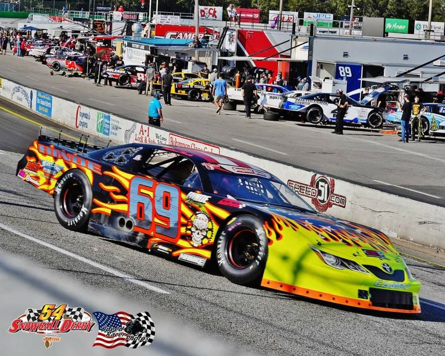

Дрифт — це техніка водіння, при якій автомобіль проходить повороти в контрольованому заносі. Водій спеціально зриває задні колеса в ковзання, підтримуючи контроль над машиною за допомогою керма та дроселя. Дрифт популярний як вид автоспорту та шоу.

Дрэг-рейсинг — це вид автоспорту, де два автомобілі або мотоцикли змагаються на прямій дистанції (зазвичай 402 метри, або чверть милі). Головна мета — подолати відрізок за найкоротший час. Старт відбувається зі світлофора, а результат визначається точністю реакції та максимальною швидкістю.

Ралі-крос — це автоспортивна дисципліна, яка поєднує елементи кільцевих гонок і ралі. Змагання проходять на спеціальних трасах, що комбінують асфальтові й ґрунтові покриття. Учасники стартують одночасно, що додає видовищності та напруги, адже контактна боротьба на трасі є звичною частиною цього виду спорту.